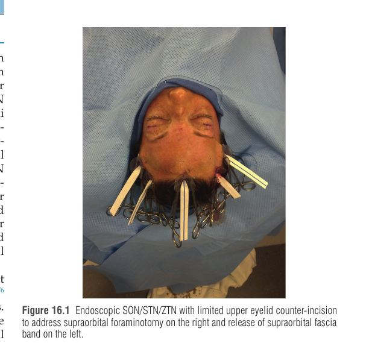
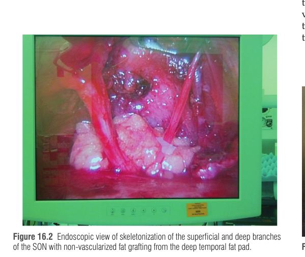
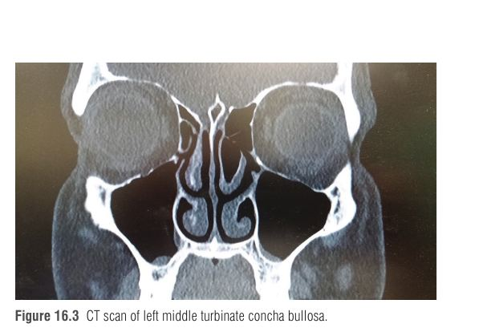

כאב פנים הוא תסמין ולא אבחנה: אותו כאב יכול לנבוע מהעצב הטריגמינלי, מהצוואר, מהאף או מדחיסה של עצב היקפי בראש. הפרק עוסק בעיקר במקרה האחרון: תת-קבוצה של חולי מיגרנה שהטריגר שלהם הוא דחיסה של עצבים היקפיים בראש ובצוואר, שאפשר לאתר ולטפל בהם בניתוח (פירוק לחץ, migraine surgery). זהו פרק קליני: מנתח פלסטי נדרש לבחור מטופל נכון, לאתר את האתר הנכון ולא להחמיץ אתר משני.
כאב פנים פוגע בכ-1.9% מאוכלוסיית העולם, פי שניים בנשים. אין אטיולוגיה אחת ולכן נדרשת גישה רב-תחומית (נוירולוג, רופא שיניים, אא״ג, מנתח פלסטי, נוירוכירורג, רפואת כאב ועוד). הסיווג הנפוץ הוא סיווג בינלאומי של הפרעות כאב ראש (ICHD-3), שמסווג כאבי ראש לפי תסמינים ולא לפי אטיולוגיה.
| סוג | קריטריונים |
|---|---|
| מיגרנה אפיזודית (עם/בלי הילה) | 5 התקפים ומעלה, 4–72 שעות; שניים מתוך: חד-צדדי, פועם, בינוני-חמור, מחמיר מפעילות יומיומית; בנוסף בחילה/הקאה או פוטופוביה/פונופוביה |
| מיגרנה כרונית (עם/בלי הילה) | 15 ימי כאב ומעלה בחודש במשך יותר מ-3 חודשים; לפחות 8 מההתקפים עונים על הקריטריונים של מיגרנה |
מיגרנה אפיזודית, בעיקר עם הילה, נחשבת כמקורה במערכת העצבים המרכזית ברמת הנוירון. מיגרנה כרונית פוגעת ב-0.9%–1.3% מהאוכלוסייה. כאב ראש מתח כרוני (כ-2.2%) שונה ממנה: הוא דו-צדדי ואינו מלווה בפוטופוביה או פונופוביה. העלות: כ-$2,649 לשנה למטופל עם מיגרנה אפיזודית וכ-$8,243 למיגרנה כרונית (נתוני 2018), בעיקר בגלל אובדן פריון.
| מצב | אופי הכאב | אבחנה וטיפול |
|---|---|---|
| נוירלגיה טריגמינלית Trigeminal neuralgia | חשמלי וחד, התקפי; בעיקר ענפים V2 ו-V3 (נדיר ב-V1); גיל כ-60, יותר בנשים | קליני; MRI תלת-ממדי ברזולוציה גבוהה לחיפוש דחיסה וסקולרית. קו ראשון: קרבמזפין או אוקסקרבזפין (חוסמי תעלות נתרן); תוספת: lamotrigine, baclofen, pregabalin, gabapentin. אם יש דחיסה וסקולרית: MVD (73% הצלחה ב-5 שנים, אך סיכוני כריאוטומיה). אפשרויות נוספות: רדיוכירורגיה סטריאוטקטית, בלון, גליצרול. |
| נוירופתיה טריגמינלית כואבת | רציף, צורב או לוחץ; הרפס זוסטר, טראומה, גידול | קליני, ובירור לפי הסיבה |
| נוירלגיה עורפית Occipital neuralgia | כאב יורה מבסיס הקרקפת קדימה, חד/דו-צדדי, לעיתים כאב רטרו-אורביטלי | קריטריוני ICHD-3; חסם מקומי רגיש אך לא ספציפי; MRI/אולטרסאונד. פיזיותרפיה, NSAID, TCA, אנטי-אפילפטיים, gabapentin, חומרי הרפיית שריר, BTX-A; RF פולסי (50% הקלה למשך 5–6 חודשים); גירוי עצב עורפי (שיפור 62%–100%). |
נוירלגיה טריגמינלית היא כאב חשמלי חד והתקפי; נוירופתיה טריגמינלית כואבת היא כאב רציף, צורב או לוחץ. אבחנה של ניוון חוליות צוואר בלבד אינה מספיקה כדי לאבחן נוירלגיה עורפית.
עצב סנסורי היקפי עובר בדרכו אל העור מתחת לשריר, דרך פיאסיה, לצד עורק או דרך פורמן בעצם. כשאחד מאלה לוחץ עליו, העצב מגורה שוב ושוב ושולח אותות כאב. מחקרים שתוארו בפרק קושרים בין העצבים החוץ-גולגולתיים לגרעין הטריגמינלי בגזע המוח דרך תעלות עצם, תפרי גולגולת ופורמינות, ולכן גירוי חוץ-גולגולתי יכול לעורר תופעה דמוית מיגרנה תוך-גולגולתית. זהו הסבר מקובל לתופעה, לא הוכחה סופית.
שרשרת הסיבתיות: דחיסה היקפית עד התקף מיגרנה.
הגילוי היה מקרי: מטופלות שעברו ניתוח מתיחת מצח דיווחו על היעלמות המיגרנה (בסקירה רטרוספקטיבית, 79.5% מהמיגרנאים). ההסבר שהוצע: שרירים כמו הקורוגטור (corrugator supercilii), הדפרסור והפרוקרוס לוחצים על ה-SON וה-STN. תמיכה בתיאוריה: הזרקת BTX-A לשריר, שמשתק אותו כימית, מקלה את הכאב, כלומר השתקה כימית מחקה כריתה כירורגית של השריר.
בהמשך התברר שהשריר אינו הגורם היחיד: גם עורקים (למשל עורק העורף ב-GON, והעורק הטמפורלי השטחי ב-AT), עצם (פורמן SON) ופיאסיה יכולים ללחוץ על העצב. לכן הסיבות העיקריות לכישלון הן החמצת אתר דחיסה משני (אתר דומיננטי יכול להסתיר חלש ממנו) ושחרור חלקי של כל נקודות הדחיסה באתר הראשי.
| אתר | מאפייני הכאב ונקודת ציון | עצב |
|---|---|---|
| I – מצח | כאב מעל הגבות, מתחיל אחר הצהריים, אופי implosive; רגישות ביציאת העצבים מהקורוגטור/הפורמן; לחץ נקודתי ושימוש בקומפרס מקלים; נפילת עפעף אפשרית | SON, STN |
| II – רקה | 17 מ״מ לרוחב ו-6.5 מ״מ קפלית לקנטוס לטרלי; מתחיל בבוקר, לעיתים עם חריקת שיניים | ZTN |
| III – רינוגני | כאב מאחורי העין, מעיר בלילה, אופי exploding; מחמיר בשכיבה (התנפחות טורבינטים), בלחץ אטמוספרי נמוך ובמחזור; דקונגסטנטים מקלים | מגע טורבינט/מחיצה |
| IV – עורף | 3 ס״מ מתחת לפרוטוברנציה העורפית ו-1.5 ס״מ לרוחב קו האמצע (יציאה מהסמיספינליס); קשור ללחץ, מתח צוואר, whiplash | GON |
| V – אוריקולוטמפורלי | ליד שורש הסלילול של האוזן; קשור לעורק הטמפורלי השטחי | AT |
| VI – עורפי קטן | בקו השיער העורפי הקרוב לאוזן | LON |
| VII – נומולרי | כאב ממוקד בצורת מטבע, לרוב עם אות עורקי ב-Doppler | ענף עורי + עורק |


| נקודת דחיסה | מיקום |
|---|---|
| 1. שריר obliquus capitis | 77 מ״מ מתחת לפרוטוברנציה, 20 מ״מ לרוחב קו האמצע |
| 2. בטן שריר הסמיספינליס | 59 מ״מ מתחת לפרוטוברנציה |
| 3. יציאה מהסמיספינליס | 30 מ״מ מהפרוטוברנציה, 17 מ״מ לרוחב |
| 4. כניסה למנהרת הטרפז | 24 מ״מ מתחת, 21 מ״מ לרוחב |
| 5. הצמדה לקו העורף (nuchal line) | 4 מ״מ מתחת, 37 מ״מ לרוחב |
| 6. עורק העורף | לא קיים בכל המטופלים |
העצב העורפי השלישי (third occipital nerve) נמצא כ-3 ס״מ מתחת ל-GON; מזהים קודם את ה-GON ורק אחר כך מטפלים בו.
רוב החולים סובלים מיותר מאתר אחד, ולכן נדרשת גישה שיטתית לכל האתרים האפשריים ולא רק לאתר הבולט. נקודת המוצא: אבחנת מיגרנה על ידי נוירולוג וכישלון טיפול תרופתי, ואז הפניה למנתח.
| אתר | מינון BTX-A לצד |
|---|---|
| GON | 25 יחידות בנקודת היציאה מהסמיספינליס |
| מצח | 12.5 יחידות לכל קורוגטור |
| רקה | 18.75 יחידות בפיזור מניפה סביב יציאת ה-ZTN |
חסם מקומי מספק מידע מעבר ל-BTX-A: הוא מזהה גם דחיסה שאינה שרירית (כלי דם, עצם, פיאסיה). עבודת Rangwani: PPV של 0.89 לחסם מוצלח לגבי הצלחת ניתוח; ה-MHI ירד מ-152.7 ל-34.3 לאחר הניתוח.

הטיפול בנוירלגיות הטריגמינלית והעורפית מפורט בטבלת סעיף 2 (חוסמי נתרן, MVD, RF, גירוי עצבי). להלן הניתוח למיגרנה היקפית.
העיקרון: להסיר או לשחרר כל מה שלוחץ על העצב (שריר, עורק, פיאסיה, עצם) ואז להגן על העצב מפני החזרת הלחץ. הניתוח נעשה בהרדמה מקומית או כללית (כללית עדיפה כשמטפלים בכמה אתרים בבת אחת), מזריקים חומר מקומי עם אפינפרין להמוסטזיס לפני החתך, ובסוף מניחים ניקוז לפי הצורך.
| אתר | גישה וטכניקה |
|---|---|
| I – מצח | גישה דרך חתך בלפרופלסטיקה עליונה, או אנדוסקופית (5 פורטים, 6 במצח רחב, 0.5 ס״מ מאחורי קו השיער). מסירים בחלקים את הקורוגטור והדפרסור (ואת סיבי הפרוקרוס הצדדיים), מנתקים את כלי ה-SON/STN, משחררים פסי פיאסיה, ופותחים פורמן דוחס בגרגרן או באוסטאוטום 2 מ״מ. נהוג לעטוף את העצב בשומן (מהכר המדיאלית של העין או מהכר הטמפורלית העמוקה). באנדוסקופיה קשה לפתוח פורמן בלי חתך עזר קטן. |
| II – רקה | פתוח (המשך חתך בלפרופלסטיקה, או חתך 3.5 ס״מ) או אנדוסקופי. מפרידים את הפיאסיה השטחית מהעמוקה בזהירות מפני הענף הפרונטלי של עצב הפנים, מנתקים כלי נלווה, ואז או traction neurectomy (העצב נמשך ומתכווץ לתוך הטמפורליס) או שחרור הפיאסיה העמוקה. התוצאות שוות. |
| III – רינוגני | ספטופלסטיה (חתך Killian בצורת L), הקטנה או שבירה החוצה של טורבינט, הסרת concha bullosa ותאי Haller, לפי CT. אין שיטה אחידה. |
| IV – GON | חתך אנכי בקו האמצע בתוך השיער. חותכים את פיאסיית הטרפז כ-1 ס״מ לרוחב קו האמצע, חותכים את הסמיספינליס עד לזיהוי ה-GON (ועליו לולאת כלי), כורתים את הסמיספינליס שמדיאלית לעצב (נקודה 2) ואת פיאסיית הטרפז והשריר שמעליו לרוחב (נקודה 3), משחררים את האובליקוס (1) ואת כניסת מנהרת הטרפז (4), עוקבים אחרי העצב עד קו העורף (5), וקושרים את עורק העורף אם קיים (6). בסוף דש שומן תלת-צדדי בסיס-קאודלי מתחת לעצב, מתפרים לרפה, וניקוז. |
| V – AT | חתך 10–15 מ״מ מעל נקודת רגישות שאומתה ב-Doppler. מנתקים את העורק הטמפורלי השטחי בקליפסים; העצב מטופל באופן דומה, לעיתים עם neurotization מתחת לפיאסיה. |
| VI – LON | מאותו חתך של GON או מחתך לטרלי; העצב ליד הקצה האחורי של ה-SCM. אם אין נקודת דחיסה: traction neurectomy וקבורת הקצוות בשריר. |
| VII – נומולרי | הרדמה מקומית במרפאה (או כללית אם כמה אתרים); חתך מעל נקודת הרגישות, כריתת העורק הלוחץ בקאוטר דו-קוטבי. |
| אתר | סיבוך (שכיחות) |
|---|---|
| מצח | גירוד בקרקפת 9%, אלופציה 6% |
| רקה | התרוקנות רקה 53%, גירוד 11%, חוסר תחושה קבוע בחתך 5% |
| רינוגני | יובש באף 19%, rhinorrhea 18%, זיהום סינוסים 5%, אפיסטקסיס שדרש דסמופרסין 5% |
| עורף | נוקשות או חולשת צוואר לסירוגין 12% |
F – Frontal (I): SON/STN
T – Temporal (II): ZTN
R – Rhinogenic (III)
G – Greater occipital (IV)
A – Auriculotemporal (V)
L – Lesser occipital (VI)
N – Nummular (VII)
משפט עזר (המצאה מקורית, לא מהפרק): Fast Trains Run Great Across Long Nights.
רכבת לילה נוסעת סביב הראש בשבע תחנות. בתחנה הראשונה (מצח) חבל קורוגטור מהדק נוסע בצמידות; בשנייה (רקה) הנוסע מתעורר בבוקר וחורק שיניים; בשלישית (אף) הוא נושם בכבדות ברגע שהוא שוכב; ברביעית (עורף) הוא חולף דרך שישה שערי מחסום עד שמגיע לקו העורף; ואז שלוש תחנות קטנות בקצה הקו. רק כשכל השערים נפתחים, הרכבת עוברת בלי כאב.
אישה בת 38 עם מיגרנה כרונית שנים שלא הגיבה לטיפול תרופתי אצל נוירולוג. היא מצביעה באצבע אחת מעל הגבה הימנית ומתארת כאב "מתפוצץ פנימה" שמתחיל אחר הצהריים, שמוקל בלחץ נקודתי, ובמהלך ההתקף העפעף הימני צונח. בנוסף יש כאב פועם בעורף. בבדיקה: רגישות ביציאת ה-SON, סימן Tinel חיובי, ואות עורקי ב-Doppler בעורף. בהתקף פעיל ניתן חסם עצב SON והכאב ירד ב-70%. ב-CT נראה פורמן SON, ללא פתולוגיה באף.